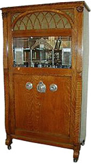

Die erste Musikbox mit Vorwahleinrichtung und Schallplatten anstelle von Musikwalzen, also der erste Musikautomat im heutigen Sinne, war der von John Gabel in Chicago gebaute "Automatische Unterhalter"(Automatic Entertainer). Das an drei Seiten eingeglaste Gerät war 1,50 m hoch; oben befand sich ein Schalltrichter mit einem Durchmesser von über einem Meter. Man konnte zwischen 24 Schallplatten wählen. 1908 stellte Gabel die Produktion der Geräte ein. Grund für den Mißerfolg dieser Geräte war ihre schlechte Klangqualität. Erst nach einigen tech. Verbesserungen ging die Musicbox Anfang der dreißiger Jahre in Serienproduktion. (Wurlitzer-Automaten)